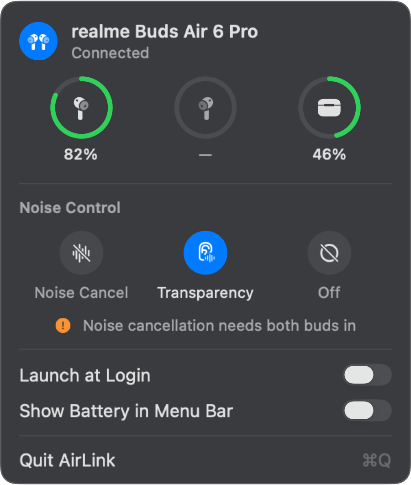

Battery at a glance
Left, right and case, as rings that turn orange at 20 % and red at 10 %. A bolt shows what's charging. Turn on the menu bar ring to see the lower bud without opening anything.
AirLink for Mac
Battery for each bud and the case, and one‑click noise control for realme Buds Air 6 Pro. Native, featherlight, and out of sight until your buds connect.
Free and open source · macOS 14 or later · Apple silicon and Intel
Left, right and case, as rings that turn orange at 20 % and red at 10 %. A bolt shows what's charging. Turn on the menu bar ring to see the lower bud without opening anything.
Noise Cancellation, Transparency or Off. The selection slides over and settles only when your buds confirm. Long‑press a bud and AirLink follows along.
AirLink hides from the menu bar until your buds connect for audio, and disappears again when they leave. No Dock icon, no windows, no scanning.
Built with SwiftUI and AppKit to match the system's own menu bar panels, in Light and Dark. Every control works with VoiceOver, and Reduce Motion swaps slides for cross‑fades.


If your buds won't switch modes, say because only one is in your ear, AirLink tells you why in one line instead of pretending. Levels the buds don't report show as "—", never a guess.

No polling, no timers, no background scanning. Your buds tell AirLink when something changes.
Measured with footprint and top on Apple silicon, macOS 27.
Pair and connect your buds in Bluetooth settings. AirLink never connects to buds on its own.
It opens the buds' control channel, the same one realme Link uses, and reads battery, wear and noise state once.
Changes arrive as pushes from the buds. Disconnect, and AirLink lets go and goes quiet.
AirLink.dmg, open it, and drag AirLink to Applications.
AirLink is free and isn't notarized by Apple, so macOS asks first. Open it, click Done, then go to System Settings › Privacy & Security and click Open Anyway.
AirLink needs Bluetooth to talk to your buds. Connect them, and the icon appears in your menu bar.
Prefer Terminal? xattr -dr com.apple.quarantine /Applications/AirLink.app does the same as step 2.
Tested on real hardware, firmware 1.1.0.75. Other realme, OPPO and OnePlus buds speak a similar protocol. Adding one is a single profile file, and the built‑in probe tool helps you find the values.
Apple only skips the warning for apps signed with a paid Developer ID and notarized. AirLink is a free, open‑source project, so macOS asks you to confirm once. The full source and the build are on GitHub, and every release is built there by GitHub Actions.
Out of the box it supports realme Buds Air 6 Pro. The app is built around per‑model profiles, so other buds that use the same realme/OPPO protocol can be added with one file.
No. While your buds are away, AirLink only waits for a Bluetooth connect notification. While they're connected, it sits at 0.0 % CPU and reacts only to messages from the buds.
The buds themselves only allow noise cancellation with both buds in your ears, and the other modes with at least one. AirLink tells you which one it is.
Yes. AirLink only talks to your buds through the Mac's own connection.